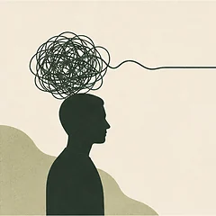
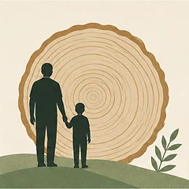
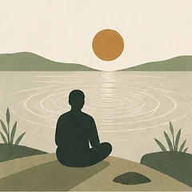
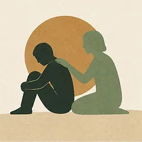

Главная → Подходы
Подходы в психотерапии
Чем они отличаются и кому какой подходит
«Подход» — это не стиль общения терапевта, а конкретная модель того, откуда берётся страдание и что с ним делать. От выбора подхода зависит, чем вы будете заниматься на сессиях: разбирать мысли по схеме, исследовать детский опыт или учиться иначе относиться к тому, что уже есть. Здесь — пять методов, на которые опираются наши психологи, без рекламы и обещаний.

КПТ — когнитивно-поведенческая терапия Работает с тем, как вы истолковываете происходящее. Самый исследованный метод и первая линия помощи при тревоге и депрессии. 8–20 сессий. Читать · 7 минут ACT — принятие и ответственность Учит не воевать с тяжёлыми мыслями, а возвращать силы на то, что для вас важно. Помогает, когда борьба с симптомом стала отдельной проблемой. Читать · 6 минут
Схема-терапия Объясняет, почему одни и те же сценарии повторяются годами. Для устойчивых паттернов и трудностей в отношениях. Длительный метод: от года. Читать · 7 минут
Mindfulness — практики осознанности Навык замечать происходящее без немедленной оценки. Доказан в профилактике рецидивов депрессии и при хронической боли — вместе с побочными эффектами. Читать · 6 минут
CFT — терапия сострадания Для тех, кто понимает разумные аргументы, но продолжает себя грызть. Работает не с содержанием мыслей, а с тоном внутреннего голоса. Читать · 6 минутКак выбрать подход
Короткий ответ: подход выбирают под задачу, а не под моду. Грубый ориентир — в таблице; но если сомневаетесь, разумнее прийти к специалисту с описанием проблемы и позволить ему предложить метод.
| Если ваш запрос | Скорее подойдёт |
|---|---|
| Конкретный симптом: панические атаки, бессонница, страх выступлений | КПТ |
| Борьба с мыслями отнимает больше сил, чем сами мысли | ACT |
| Один и тот же сценарий повторяется с разными людьми | Схема-терапия |
| Голова не выключается, тревога живёт в теле | Осознанность |
| Понимаете, что несправедливы к себе, но легче не становится | CFT |
Важная оговорка: в реальной работе специалисты редко держатся одного метода строго. Большинство работает интегративно — берёт из подходов то, что уместно для конкретного человека. Так что «мой терапевт работает в КПТ» обычно означает основную рамку, а не запрет на всё остальное.
Что важнее выбора метода
Об этом редко говорят, когда сравнивают подходы: по данным исследований, качество контакта между клиентом и терапевтом предсказывает результат лучше, чем принадлежность к конкретной школе. Если с человеком напротив вам небезопасно, самый доказательный метод не сработает.
Практический вывод простой: метод — это причина выбрать специалиста, но не причина оставаться у него, если контакт не складывается. Менять терапевта — нормально.
Чем пять подходов отличаются друг от друга
Все пять входят в число доказательных, но отвечают на разные вопросы. Проще всего сравнивать их по тому, во что упирается работа: одни разбирают содержание мыслей, другие — отношение к ним, третьи — их происхождение.
| Подход | С чем работает | Чем занимаетесь на практике | Сколько длится |
|---|---|---|---|
| КПТ | С содержанием мыслей и с поведением | Разбираете конкретные ситуации, проверяете мысли на соответствие фактам, выполняете задания между сессиями | 8–20 сессий |
| ACT | С отношением к мыслям, а не с их содержанием | Учитесь замечать мысль как мысль, проясняете свои ценности и возвращаете действия к ним | 8–16 сессий |
| Схема-терапия | С устойчивыми сценариями родом из детства | Находите повторяющиеся схемы, отслеживаете переключение режимов, работаете с ранним опытом | От года |
| Mindfulness | С автоматизмом реакций и руминацией | Регулярная практика внимания к дыханию, телу и происходящему без немедленной оценки | Курс 8 недель, дальше сами |
| CFT | С самокритикой и стыдом | Тренируете способность обходиться с собой так же, как обошлись бы с близким в беде | 12–20 сессий |
Практическое правило выбора такое. Если проблема очерчена и вы понимаете, что именно хотите изменить, — логично начинать с КПТ: это первая линия помощи при тревоге и депрессии, и по ней больше всего исследований. Если вы уже пробовали спорить со своими мыслями и от этого становилось только хуже, разумнее ACT: там борьба с симптомом сама рассматривается как часть проблемы. Если одни и те же сценарии повторяются годами независимо от обстоятельств — это территория схема-терапии. Если главный голос внутри — обвиняющий, начинать стоит с CFT, потому что остальные методы у людей с сильной самокритикой часто превращаются в ещё один повод себя ругать.
Важная оговорка: в реальной работе методы редко применяются в чистом виде. Большинство практикующих специалистов интегрируют приёмы из нескольких подходов, ориентируясь на конкретного человека. Название метода в описании специалиста говорит о том, на какой логике он в основном опирается, а не о том, что ничего другого он не использует.
Хотите попробовать разные подходы в разговоре, прежде чем выбирать специалиста? В приложении подход настраивается — от когнитивной логики до мягкой поддержки.
Попробовать бесплатноЧастые вопросы
Какой подход в психотерапии самый эффективный?
Такого подхода нет. Исследования устойчиво показывают, что при большинстве состояний разные доказательные методы дают сопоставимый результат, а на исход сильнее влияет качество контакта со специалистом. Разница есть по конкретным задачам: при тревоге и депрессии первой линией считается КПТ, при повторяющихся жизненных сценариях лучше подходит схема-терапия.
Чем ACT отличается от КПТ?
КПТ работает с содержанием мысли: проверяет, насколько она соответствует фактам, и помогает найти более точную формулировку. ACT содержание не оспаривает — она меняет отношение к мысли, помогая заметить её как мысль и не воевать с ней. ACT часто выбирают, когда борьба с тревожными мыслями сама стала отдельной проблемой.
Сколько длится психотерапия?
Зависит от метода и задачи. Короткие протоколы КПТ и ACT рассчитаны на 8–20 сессий, курс практик осознанности — обычно на 8 недель, схема-терапия — длительный метод от года. Это ориентиры, а не обещание: реальная продолжительность обсуждается со специалистом и корректируется по ходу работы.
Можно ли заниматься по этим подходам самостоятельно?
Частично да. Приёмы самопомощи из КПТ, ACT и практик осознанности описаны в открытых руководствах, и они работают при умеренных состояниях. Но самостоятельная работа плохо заменяет специалиста там, где нужен взгляд со стороны: при устойчивых сценариях в отношениях, при травматическом опыте и при выраженных состояниях, когда сил на регулярную практику просто нет.
Материалы подготовлены командой AI Therapist. Мы описываем подходы в том виде, в каком они представлены в клинических руководствах и профессиональной литературе, указываем ограничения каждого метода и не обещаем результата: эффективность психотерапии зависит от состояния, запроса и качества контакта со специалистом.
Кто отвечает за содержание сайта и по каким правилам мы готовим материалы — на странице о проекте.